Una selección de mis trabajos a crochet. Explora los personajes, accesorios y detalles que hacen diferente a cada pieza.
Harry Styles
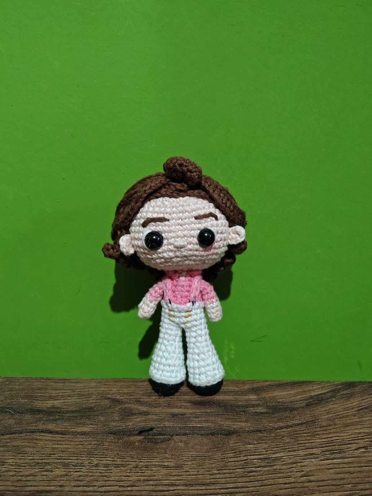
Figura tejida a mano que captura el estilo característico del cantante, con detalles cuidados en su vestuario, peinado icónico y una textura suave gracias a su tejido artesanal.
Para conocer su procedimiento, haz clic en el botón de abajo:
Ver más
Spiderman Personalizado
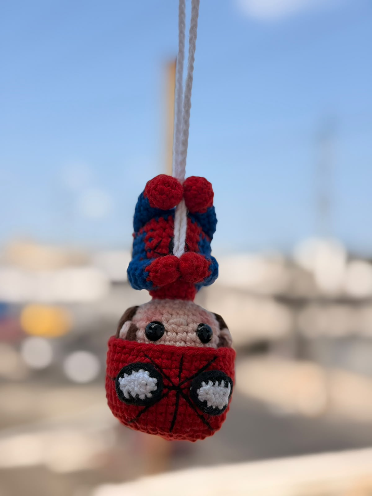
Amigurumi detallado del héroe arácnido con bordados precisos en la máscara y traje. Confeccionado con un punto firme para mantener la forma perfecta en cualquier repisa.
Para conocer su procedimiento, haz clic en el botón de abajo:
Ver más
Luffy - One Piece
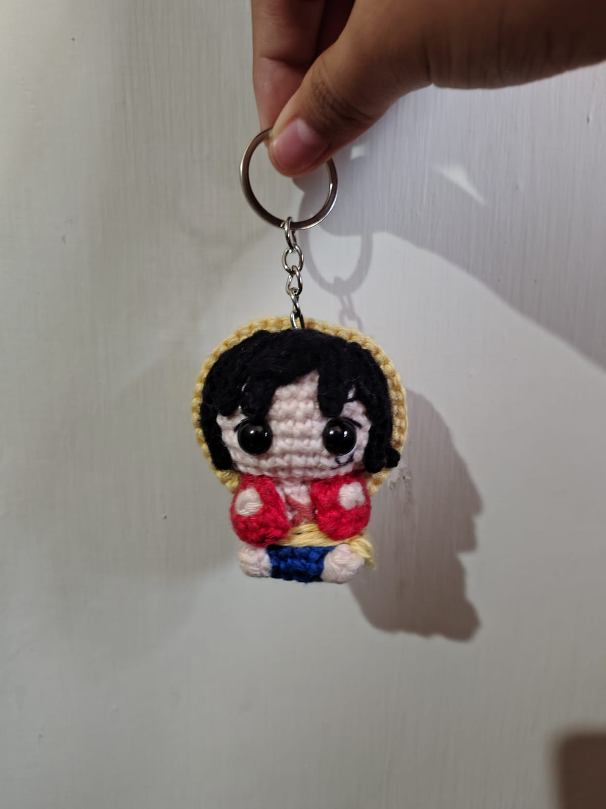
El capitán de los Sombreros de Paja en formato amigurumi, tejido con su clásico sombrero de paja, cicatriz bordada y acabados detallados para los fans del anime.
Para conocer su procedimiento, haz clic en el botón de abajo:
Ver más
Ramo Reversible
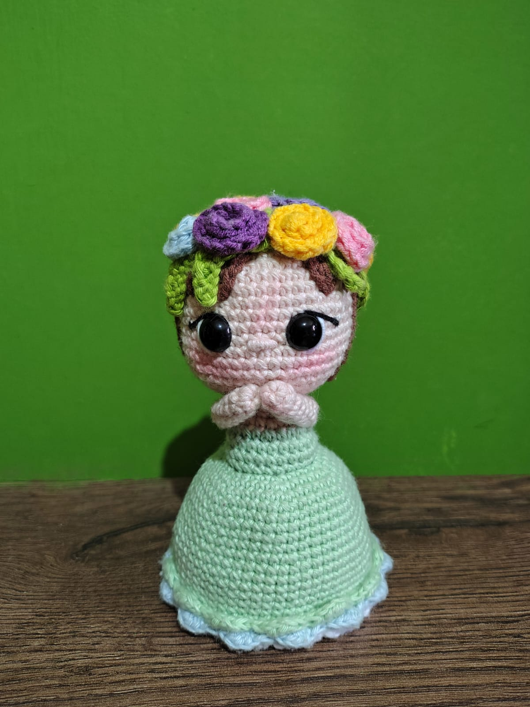
Diseño floral innovador y versátil que cambia de forma o color con un solo movimiento. Ideal como detalle eterno que no se marchita y decora cualquier rincón.
Para conocer su procedimiento, haz clic en el botón de abajo:
Ver más
Toad - Mario Bros
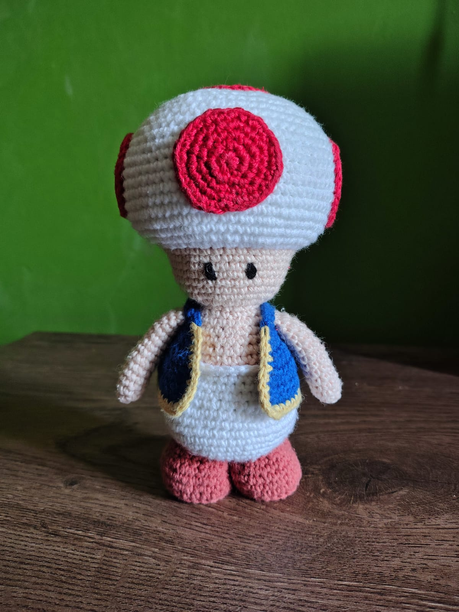
El simpático hongo del Reino Champiñón recreado a crochet, destacando su chaleco característico y sombrerito a lunares con un relleno denso e hipoalergénico.
Para conocer su procedimiento, haz clic en el botón de abajo:
Ver más
Frieren
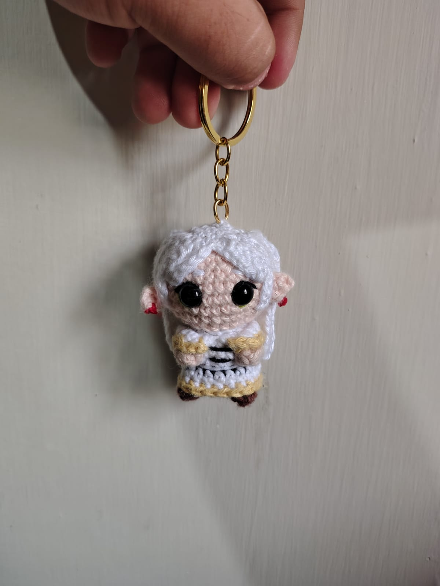
Edición especial tejida con hilos de tonos delicados, capturando el cabello de dos coletas, las orejas elfas y la vestimenta distintiva de la mítica maga.
Para conocer su procedimiento, haz clic en el botón de abajo:
Ver más
K-Pop Demon Hunters
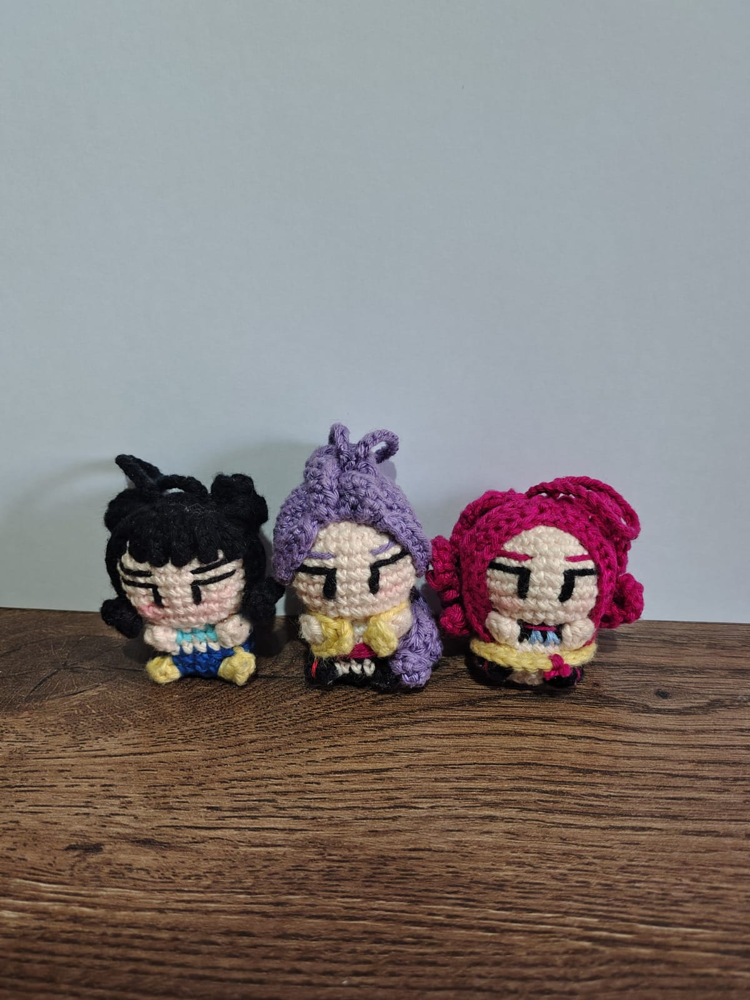
Diseño inspirativo de estilo idol con vestuario estilizado, detalles bordados a mano y una combinación de colores vibrantes para amantes de la cultura pop.
Para conocer su procedimiento, haz clic en el botón de abajo:
Ver más
Rana
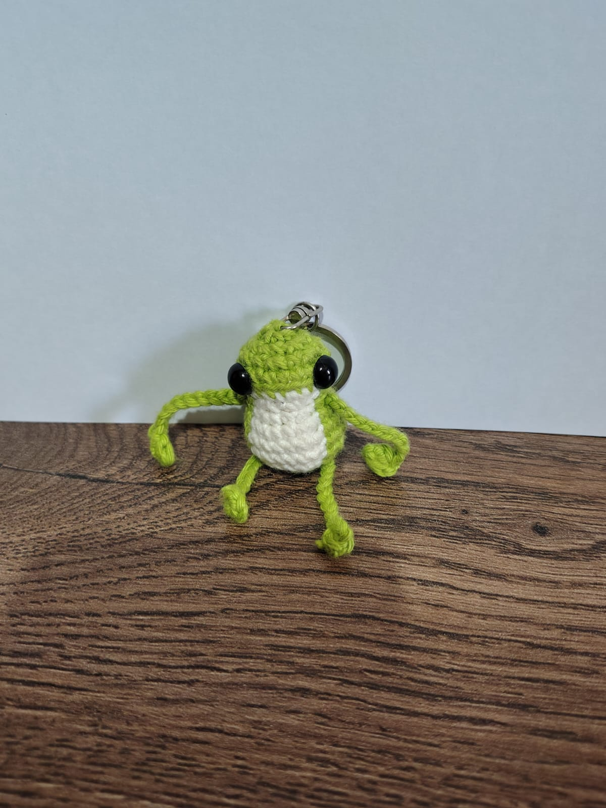
Simpática pieza tejida con expresión tierna y tonos verdes vivos. Su textura afelpada la hace perfecta como compañero de escritorio o amuleto de buena suerte.
Para conocer su procedimiento, haz clic en el botón de abajo:
Ver más
Novios
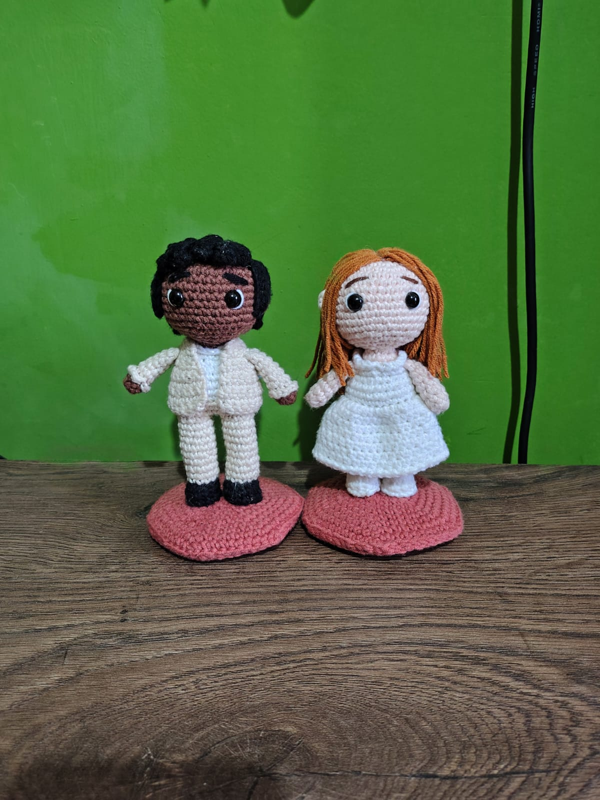
Pareja personalizada tejida a mano para eventos especiales. Incluye detalles minuciosos como el vestido, velo y traje de etiqueta para un recuerdo inolvidable.
Para conocer su procedimiento, haz clic en el botón de abajo:
Ver más
Sailor
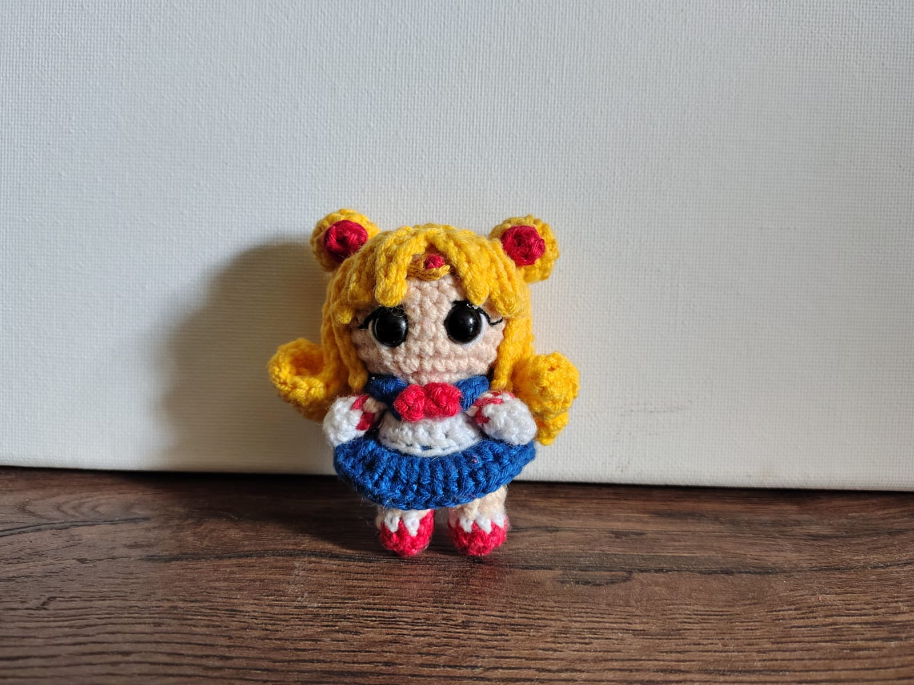
Inspirada en las heroínas mágicas, esta pieza resalta por el tejido preciso de su uniforme marinero, lazadas frontales y colores intensos de alta durabilidad.
Para conocer su procedimiento, haz clic en el botón de abajo:
Ver más
Snoppy
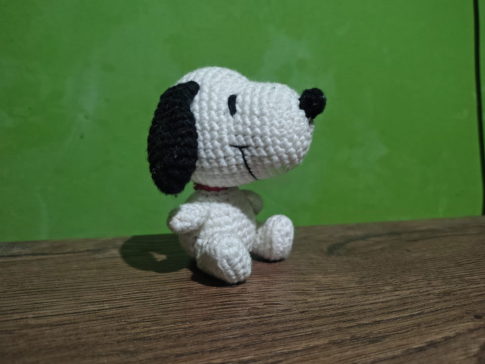
El clásico beagle recreado a crochet con silueta limpia, orejas caídas tejidas en contraste y su característico hocico bordado a mano.
Para conocer su procedimiento, haz clic en el botón de abajo:
Ver más
Appa
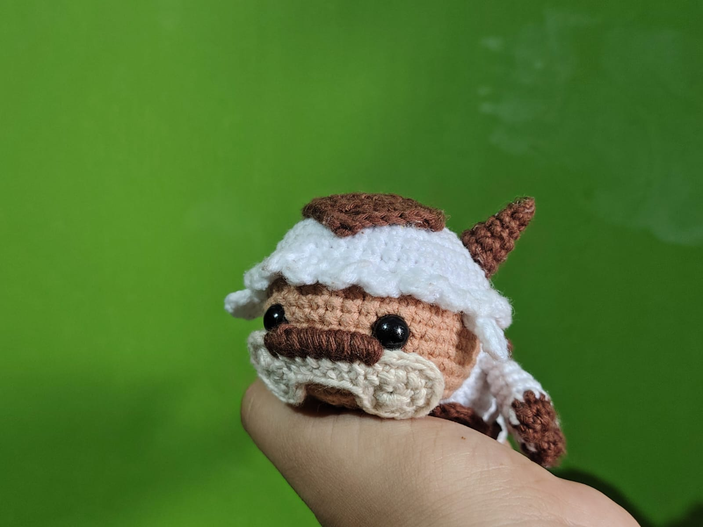
El bisonte volador en versión peluche de crochet, tejiendo sus seis patas, cuernos curvos y flecha distintiva con una textura suave y acogedora.
Para conocer su procedimiento, haz clic en el botón de abajo:
Ver más